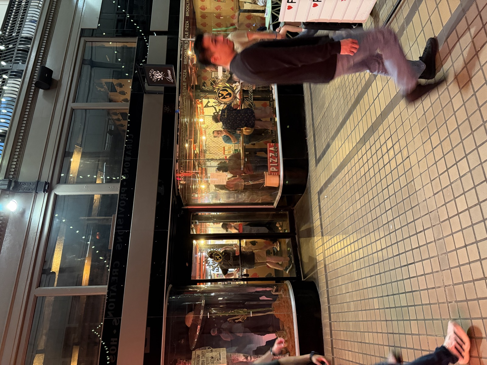
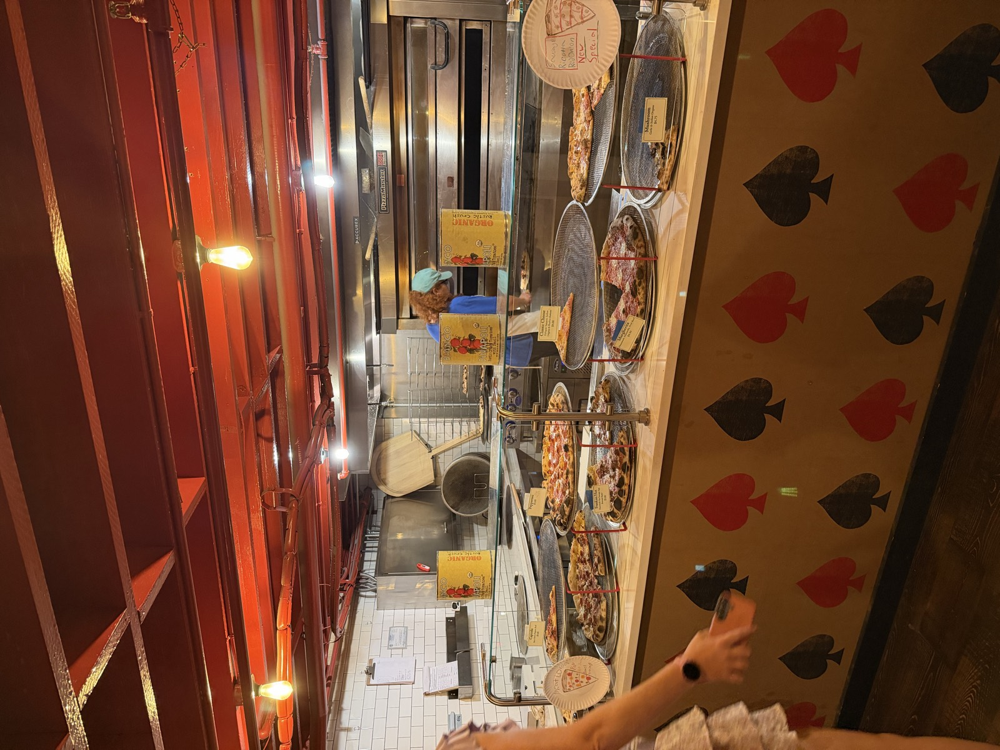
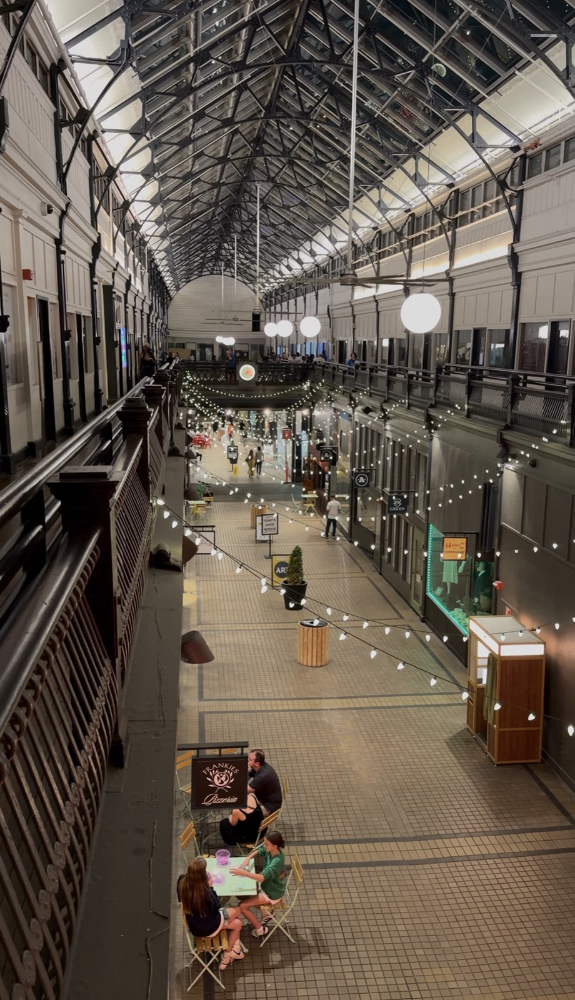
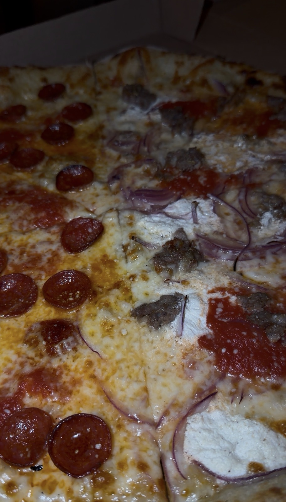

- ⭐ Sam Score: 7.6/10
- 📅 Visited: September 12, 2026
- 📍 Address: 40 The Arcade, Nashville, TN 37219
- 💰 Price: $$
- 🍽️ Cuisine: Pizza
- 🚗 Parking: Paid parking
- 🌐 Website: frankiesnashville.com/pizzeria/
❤️ Great For:
🎉 Group Friendly
My Video Review
About Frankies Pizzeria
Frankies Pizzeria sits inside Urban Cowboy in The Arcade, the glass-roofed 1902 shopping arcade downtown. It's New York style, from the Brooklyn Frankies Spuntino team, with naturally leavened dough sold by the slice or as 12 and 18 inch rounds. Walk-in only, and tables spill out into the arcade itself.
What I Ordered
An 18-inch pizza, half pepperoni and half the sausage, ricotta and red onion special.
Photos




Pros & Cons
👍 Pros
- Cool area
- Open late
- Lots of seating
👎 Cons
- Pricey